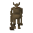
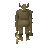
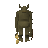
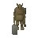
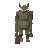
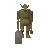

Mountain Troll

| Config name | death_troll_melee4 |
| NPC id | 1109 |
| Combat level | 69 |
| Hitpoints | 90 |
| Attack / Strength / Defence | 40 / 75 / 40 |
| Respawn | 100 ticks |
| Options | Attack |
| Category | mountain_troll |
| Aggression | cowardly |
| Wander range | 5 tiles from spawn |
| Max range | 7 tiles from spawn |
| Defined in | scripts/quests/quest_death/configs/quest_death.npc |
| Bonuses | Attack bonus 20, Strength bonus 20, Crush def 10, Magic def 200, Range def 200 |
Mountain Troll
Small for a troll but mean and ugly.
Show all 8 spawns on the world map → Open in knowledge graph →
Drops
Drop script: scripts/drop tables/scripts/mountain_troll.rs2 (category handler _mountain_troll)
Always dropped
| Item | Quantity | Rarity | Notes |
|---|---|---|---|
| 1 | Always | if npc_type = troll_prison_guard1 if npc_type = troll_prison_guard1_awake if %troll_quest < ^troll_freed_godric if ~obj_gettotal(troll_key_godric) = 0 | |
| 1 | Always | if npc_type = troll_prison_guard2 if npc_type = troll_prison_guard2_awake if %troll_freed_eadgar = ^false if ~obj_gettotal(troll_key_eadgar) = 0 | |
| 1 | Always | ||
| 1 | Always |
Locations
| Area | Coordinates | Level | Count | Map |
|---|---|---|---|---|
| Death Plateau | 2866, 3595 | 0 | 1 | view |
| Death Plateau | 2876, 3589 | 0 | 1 | view |
| Troll Stronghold | 2847, 3676 | 0 | 1 | view |
| Troll Stronghold (underground) | 2825, 10086 | 1 | 1 | view |
| Troll Stronghold (underground) | 2836, 10077 | 1 | 1 | view |
| Troll Stronghold (underground) | 2838, 10098 | 2 | 1 | view |
| Trollheim | 2909, 3641 | 0 | 1 | view |
| Trollheim (underground) | 2921, 10032 | 0 | 1 | view |
Related NPCs (category mountain_troll)

Mountain Troll
Mountain Troll
Twig
Berry
Mountain Troll